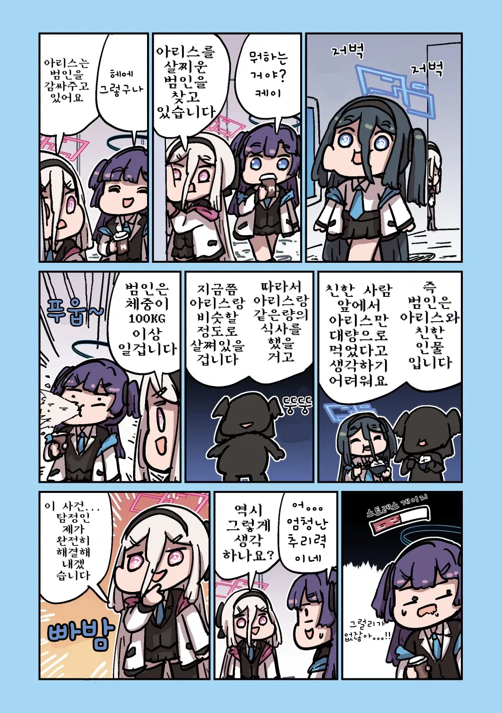

37 · 11 · 5 시간 전 · 원문

수집 당시 댓글 11개
고릴라촌장 · 6 시간 전
볼 접히는거 왜 저래 ㅋㅋㅋㅋㅋ
바보도알수있게 · 6 시간 전
컬러브 · 6 시간 전
유우카하고만 즐긴 게 아니라는 결말 나올 거 같음. 센세나 다른 애들하고도 즐겨서 아리스만 살쪘다거나.
왜용 · 6 시간 전
100키로 ㅋㅋㅋㅋㅋㅋ
오스만유머 · 6 시간 전
포도음료 · 6 시간 전
만주의schd · 6 시간 전
Montmartre · 6 시간 전
깨진대가리봉합중 · 6 시간 전
Aquamarine · 5 시간 전
케이가 먼저 볼프세크 강철이 되겠구나…
미카모ᅟᅠ네루 · 3 시간 전

볼 접히는거 왜 저래 ㅋㅋㅋㅋㅋ